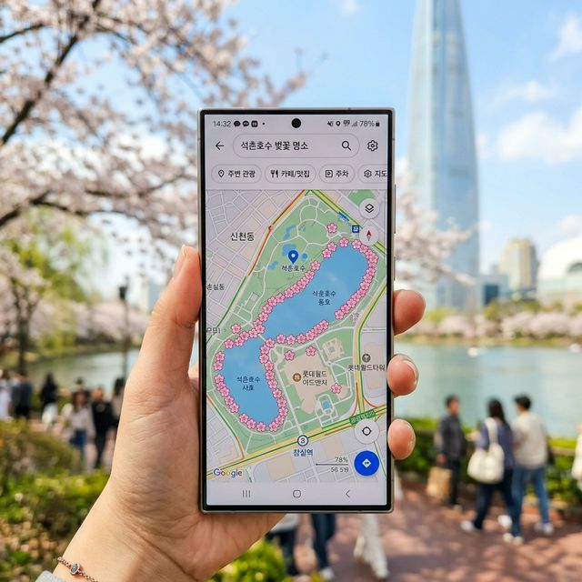
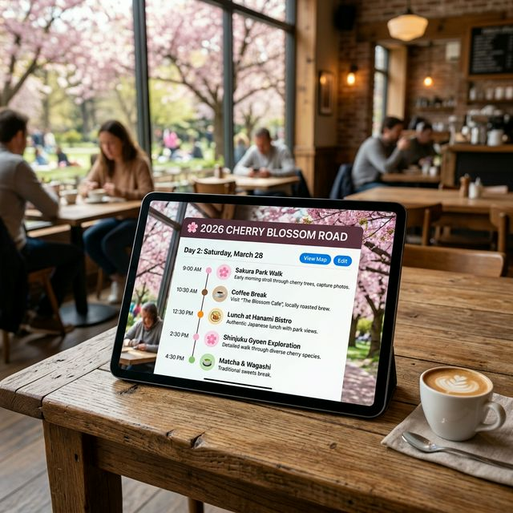

올해 가장 화제가 되고 있는 기능은 단연 카카오맵의 **실시간 벚꽃 지도**입니다. 전국 주요 100여 개 벚꽃 명소의 상태를 세 단계(개화 전, 개화 시작, 만개)로 실시간 업데이트해 주는데요.
검색창 하단의 '벚꽃 지도' 버튼만 누르면 지도가 핑크빛으로 물듭니다. 단순히 꽃이 폈는지뿐만 아니라, 해당 장소의 작년 대비 개화 시기 비교 데이터와 예상 만개 일까지 머신러닝으로 분석해 보여주기 때문에 헛걸음할 확률을 제로에 가깝게 줄여줍니다. 오늘(3/28) 꿀팁: 진해와 부산 지역은 현재 '만개' 핀이 활성화되어 있습니다.
이제는 여행 계획도 AI에게 맡기는 시대입니다. 단순히 "벚꽃 명소 추천해 줘"가 아니라 구체적인 프롬프트를 활용해 보세요.

추천 프롬프트: "3월 28일 서울 출발, 1박 2일 일정으로 경주 벚꽃 여행을 가고 싶어. 운전 시간은 하루 최대 4시간, 부모님과 함께 가기 좋은 평탄한 코스와 줄 서지 않는 로컬 식당을 포함해서 동선을 클러스터링 기반으로 짜줘." 이렇게 물어보면 AI 여행 플래너는 기성 여행사보다 훨씬 정교한 개인 맞춤형 스케줄을 단 10초 만에 제시합니다.
가장 정확한 팩트는 기상청에 있습니다. 기상청 날씨누리 앱의 '봄꽃 개화 현황' 탭을 추천합니다. 이곳에서는 전국 표준 벚나무의 가지에서 꽃이 세 송이 이상 핀 시점(개화)과 80% 이상 핀 시점(만개)을 사람이 직접 확인하고 사진으로 기록해 줍니다.
3월 28일 현재 기상청 데이터: 남부 지방(부산, 제주, 광주)은 이미 화려한 꽃망울을 모두 터뜨렸으며, 대전과 서울 중랑천 일대는 이제 막 '첫 개화' 신호가 포착되었습니다.
| 지역 | 실시간 상태 (3/28) | 예상 만개 시기 | 추천 앱/서비스 |
|---|---|---|---|
| 경남 진해 (군항제) | 만개 (진행 중) | 3/27 ~ 4/2 | 송파·창원 실시간 CCTV |
| 경주 (보문단지) | 개화 시작 (50%) | 4/1 ~ 4/7 | 카카오맵 벚꽃핀 확인 |
| 서울 (여의도/석촌호수) | 꽃봉오리 (카운트다운) | 4/4 ~ 4/12 | 송파구 벚꽃 인스타그램 |
현장의 실제 인파가 궁금하다면? '국가교통정보센터'나 지자체 앱의 **고속도로 및 도심 CCTV** 기능을 활용해 보세요. 주요 벚꽃길 근처의 도로 상황뿐만 아니라 도보 산책로의 혼잡도를 직접 눈으로 확인할 수 있습니다. 축제장 입구에서 차를 돌려야 하는 사태를 방지하는 최고의 '정보 필터'입니다.
혹시 꽃구경 간 날 날씨가 흐려서 속상하신가요? 최신 스마트폰의 AI 사진 보정 기능을 활용해 보세요. '하늘 교체' 기능이나 '벚꽃 채도 조절' 필터를 사용하면 흐린 날 찍은 사진도 전문 작가가 찍은 듯한 맑고 화사한 풍경으로 바꿀 수 있습니다. 2026년형 플래그십 폰들은 이제 'AI 생성 보정'을 통해 나뭇가지에 가려진 꽃들도 자연스럽게 채워 넣어 줍니다.
꽃 이름이 궁금할 땐 대기만 하세요. AI가 품종과 개화 정보, 꽃말까지 즉시 가이드해 줍니다.
지하철역에서 호수까지 가장 덜 붐비는 '지름길' 안내는 카카오맵의 '혼잡도 회피 경로' 설정을 켜주세요.
꽃구경 근처 맛집들은 오늘 같은 날 대기 지옥입니다. 무조건 앱으로 원격 웨이팅을 걸고 꽃을 감상하세요.
과거에는 "한번 가보자"였다면, 이제는 "가기 전 이미 알고 가는" 시대입니다. 스마트폰 속의 데이터들이 여러분의 소중한 시간을 아껴주고, 더 아름다운 장면을 포착하게 도와줄 것입니다. 오늘 전해드린 실시간 꽃지도와 AI 플래닝 팁들을 하나하나 실천해 보며, 2026년의 봄을 가장 스마트하게 맞이하시길 바랍니다.